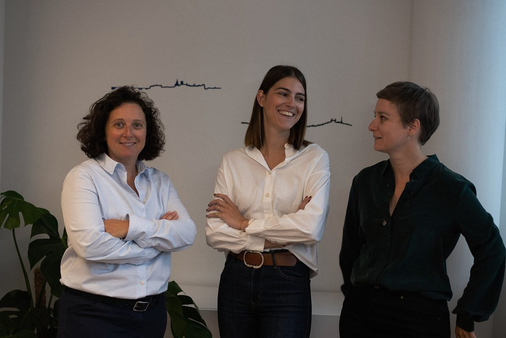
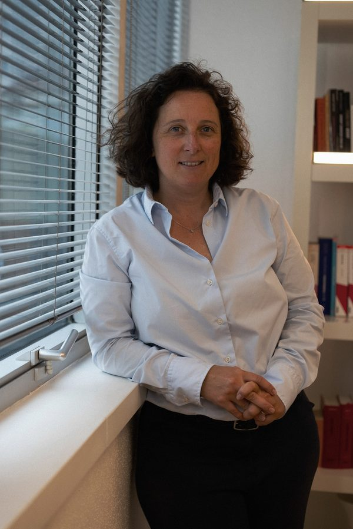
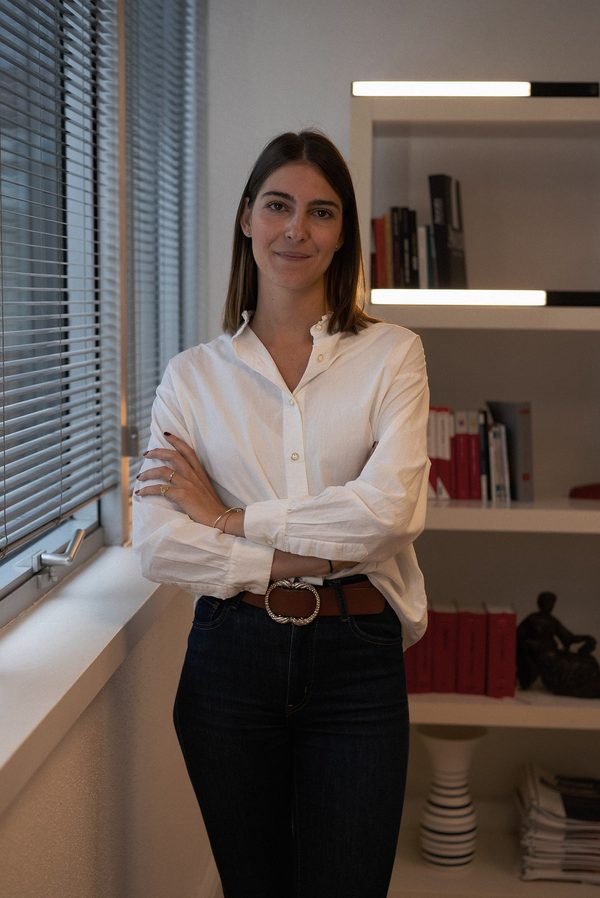
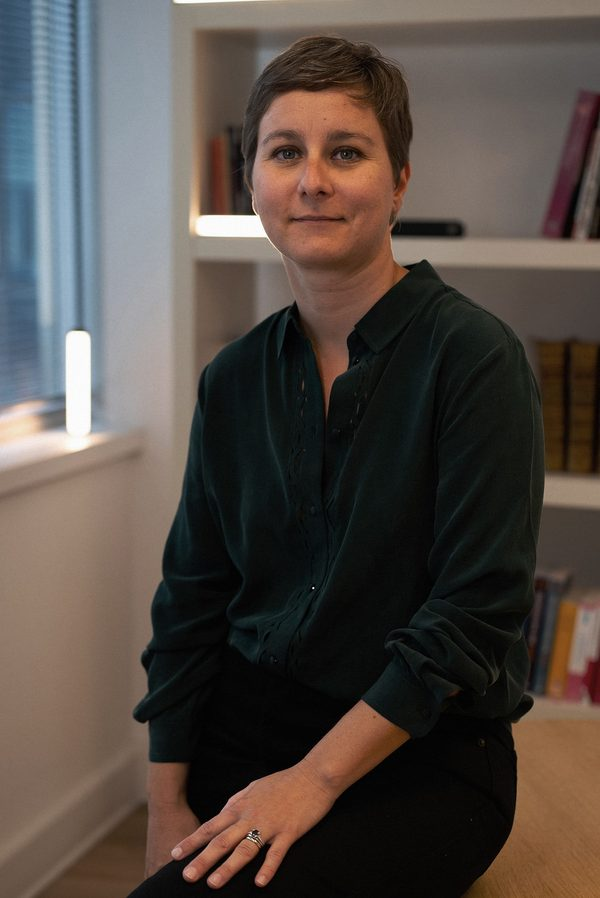
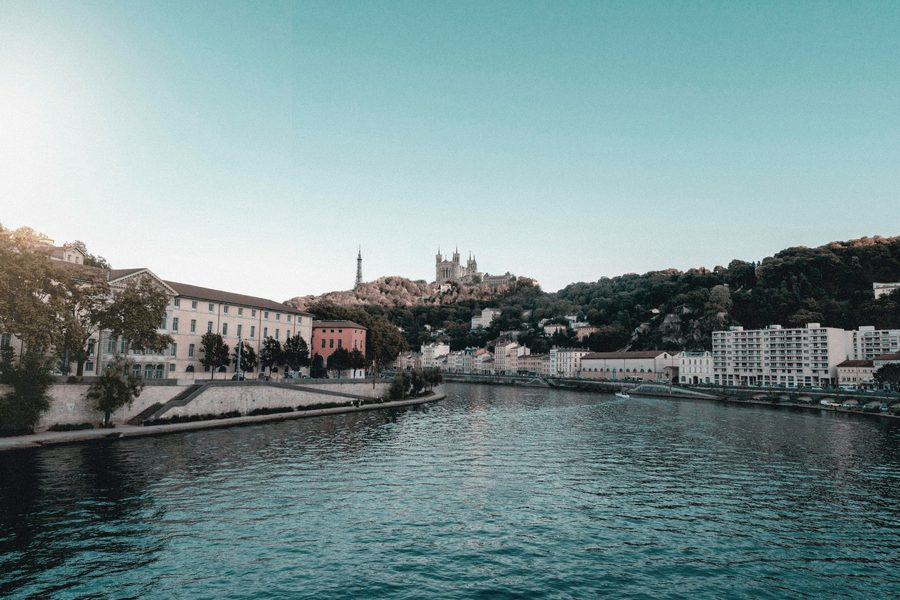
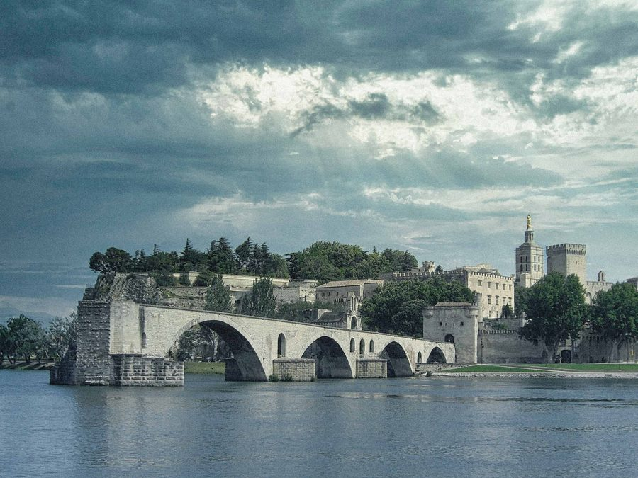

Les vraies photos du cabinet (séance au bureau de Lyon) sont au cœur des trois. Aperçus de l'ouverture de l'accueil, palette en codes et typographies.
Avocates · Lyon & Avignon

Clair, chaleureux, éditorial : la lumière de leurs bureaux (blanc, chêne, vert des plantes), un vert sapin pour rythmer, une terre cuite pour agir. Rassurant pour une personne qui traverse un divorce ou un conflit avec son administration.
DM Serif Display, en italique pour les titres · Albert Sans pour le texte



Gisèle Halimi, marraine de serment de Me Di Nicola
Engagé et contrasté : vert nuit, ivoire pour les sections pratiques (domaines, tarifs, formulaire), un vermillon franc. Très affirmé, plus militant que rassurant pour une clientèle en séparation ou en succession.
Anybody condensé pour les titres géants · Inter Tight pour le texte


Minéral et serein : pierre calcaire, bleu nuit des chaises et de la silhouette de Lyon accrochée au mur du cabinet, ocre de Provence. Plus institutionnel, centré sur les deux bureaux.
Brygada 1918 pour les titres · Instrument Sans pour le texte